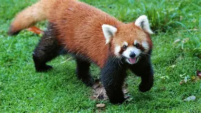
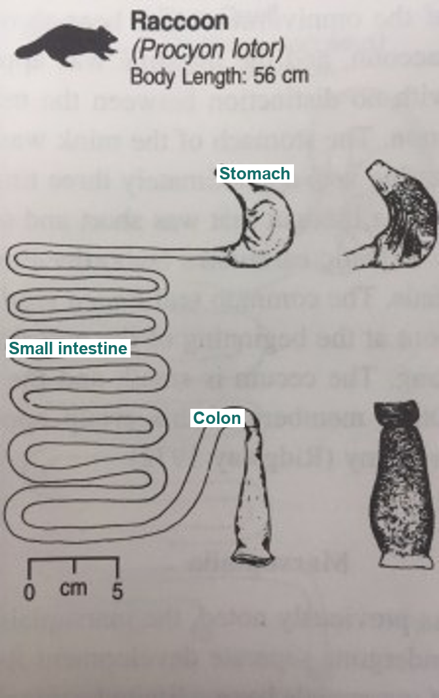

A carnivore by name, an omnivore by diet, running mostly on bamboo.
The red panda is a small mammal native to the temperate forests of the Himalayas and southwestern China. It's known for its reddish fur, ringed tail, and serious climbing skills, spending most of its time up in the trees. It technically belongs to the order Carnivora, but its day-to-day life looks a lot more like a plant eater's than a hunter's.
Roughly 90 to 95% of a red panda's diet is bamboo leaves and shoots, but it'll also eat fruit, berries, acorns, insects, bird eggs, and occasionally a small mammal if the chance comes up. To grip bamboo stalks, it relies on a "false thumb," an enlarged wrist bone (the radial sesamoid) that works like an opposable digit. It's the same trick the giant panda uses, even though the two species aren't closely related at all. That flexible diet lets the red panda keep eating even when bamboo gets scarce during parts of the year, which shapes everything in the next section.
The red panda grazes on bamboo and other vegetation pretty much around the clock, taking frequent breaks because bamboo hands back so little energy. That makes it a continuous feeder. Even though it sits in the order Carnivora, it's really an omnivore: it eats both plant and animal matter, just with bamboo dominating the plate. Its foraging style is best described as a grazer or browser that opportunistically grabs insects, eggs, or small animals when they're around, not a dedicated hunter or scavenger. All of this connects: because its gut can't process plant fiber efficiently, bamboo alone is a weak, unreliable energy source, so the red panda has to graze near-constantly and top up with whatever animal matter it can find.
The false thumb (that same radial sesamoid) handles gripping bamboo stalks, and its teeth reflect the omnivorous diet: sharper carnivore-style teeth sitting alongside molars built for grinding plant material.

No published diagram of the red panda's own digestive tract exists, so this shows the raccoon instead, a close relative in the same superfamily (Musteloidea) with the same gut layout: single-chamber stomach, no cecum, short colon.
Inside, it's monogastric: a single-chambered stomach, nothing like the multi-chambered setup you'd find in a ruminant such as a cow or sheep. There's minimal fermentation happening anywhere in the tract, and without a specialized system for breaking down fiber, food moves through relatively fast. That's why the red panda has to eat such large volumes of bamboo just to get enough nutrients. Like most of Carnivora, it lacks a well-developed cecum, and its colon stays short and unsacculated instead of the enlarged, sacculated colon you'd see in a dedicated hindgut fermenter.